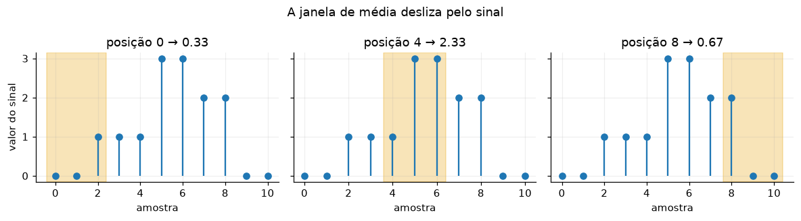
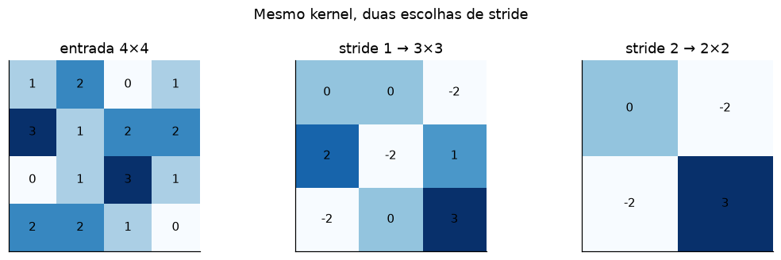
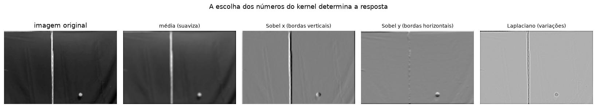

A prática completa está abaixo: explicação, código e resultados da execução.
1 — Convolução: de sinais a imagens
Objetivo. Entender a convolução como uma janela que desliza, multiplica e soma; calcular exemplos 1D e 2D; e observar como padding, stride e o kernel mudam a saída.
Este tutorial adapta a primeira metade de 10_convolucao_e_cnn.ipynb, de Gustavo von Atzingen, preservando a procedência. A parte de CNN foi movida para o notebook 2. A discussão e a API também seguem a documentação de Conv2D do Keras.
Os widgets ajudam quando há um kernel ativo. Logo abaixo de cada widget há uma vista estática equivalente, que continua visível no GitHub e no HTML exportado.
Preparação
Precisamos apenas de NumPy, Matplotlib e ipywidgets. Se o widget não aparecer no seu leitor, use as figuras estáticas já salvas no notebook.
Código · célula 1
from pathlib import Path
from urllib.request import urlretrieve
import matplotlib.pyplot as plt
import numpy as np
from IPython.display import display
import ipywidgets as widgets
plt.rcParams.update({
"figure.figsize": (9, 4),
"figure.dpi": 110,
"axes.spines.top": False,
"axes.spines.right": False,
"axes.grid": True,
"grid.alpha": 0.2,
})
np.random.seed(42)1. Convolução em uma dimensão
Para funções contínuas, a convolução é
$$(f * g)(t)=\int_{-\infty}^{\infty}f(\tau)g(t-\tau)\,d\tau.$$
Imagine uma cópia invertida de $g$ deslizando sobre $f$. Em cada posição, multiplicamos as duas funções e integramos a sobreposição. Em dados amostrados, a integral vira uma soma:
$$y[i]=\sum_{j=0}^{K-1}x[i+j]k[j].$$
A expressão acima, sem inverter k, é tecnicamente correlação cruzada. Bibliotecas de visão e camadas Conv2D usam essa forma, embora mantenham o nome “convolução”. Como os valores do kernel são escolhidos ou aprendidos, essa convenção não atrapalha a CNN — mas vale conhecer a diferença matemática.
Código · célula 2
sinal = np.array([1, 2, 3, 4, 5], dtype=float)
kernel = np.array([1, 0, -1], dtype=float)
def correlacao_1d(sinal: np.ndarray, kernel: np.ndarray) -> np.ndarray:
n_saida = len(sinal) - len(kernel) + 1
saida = np.zeros(n_saida)
for i in range(n_saida):
janela = sinal[i : i + len(kernel)]
saida[i] = np.sum(janela * kernel)
return saida
resultado = correlacao_1d(sinal, kernel)
print("sinal: ", sinal)
print("kernel: ", kernel)
print("correlação: ", resultado)
print("convolução: ", np.convolve(sinal, kernel, mode="valid"))sinal: [1. 2. 3. 4. 5.] kernel: [ 1. 0. -1.] correlação: [-2. -2. -2.] convolução: [2. 2. 2.]
No primeiro valor, a janela [1, 2, 3] produz 1×1 + 2×0 + 3×(-1) = -2. O kernel [1, 0, -1] responde a variações: regiões constantes ficam próximas de zero; transições produzem valores com módulo maior.
Widget: acompanhe a multiplicação e a soma
Código · célula 3
sinal_longo = np.array([0, 0, 1, 1, 1, 3, 3, 2, 2, 0, 0], dtype=float)
kernel_media = np.ones(3) / 3
def desenhar_janela_1d(posicao: int = 0) -> None:
janela = sinal_longo[posicao : posicao + len(kernel_media)]
produto = janela * kernel_media
fig, eixos = plt.subplots(1, 2, figsize=(9, 3))
eixos[0].stem(range(len(sinal_longo)), sinal_longo, basefmt=" ")
eixos[0].axvspan(posicao - 0.4, posicao + 2.4, color="#E69F00", alpha=0.25)
eixos[0].set(title=f"Janela na posição {posicao}", xlabel="amostra", ylabel="valor")
eixos[1].bar(["1º", "2º", "3º"], produto, color="#0072B2")
eixos[1].axhline(0, color="0.25", linewidth=1)
eixos[1].set(title=f"Produtos; soma = {produto.sum():.2f}", ylabel="janela × kernel")
plt.tight_layout()
plt.show()
controle_1d = widgets.interactive(
desenhar_janela_1d,
posicao=widgets.IntSlider(min=0, max=len(sinal_longo) - 3, step=1, value=0),
)
display(controle_1d)Código · célula 4
# Vista estática do mesmo processo em três posições.
fig, eixos = plt.subplots(1, 3, figsize=(11, 3), sharey=True)
for eixo, posicao in zip(eixos, [0, 4, 8]):
eixo.stem(range(len(sinal_longo)), sinal_longo, basefmt=" ")
eixo.axvspan(posicao - 0.4, posicao + 2.4, color="#E69F00", alpha=0.28)
valor = np.sum(sinal_longo[posicao : posicao + 3] * kernel_media)
eixo.set_title(f"posição {posicao} → {valor:.2f}")
eixo.set_xlabel("amostra")
eixos[0].set_ylabel("valor do sinal")
fig.suptitle("A janela de média desliza pelo sinal")
plt.tight_layout()
2. Da linha para a imagem: convolução 2D
Uma imagem em tons de cinza é uma matriz. O kernel agora possui altura e largura:
$$S[i,j]=\sum_m\sum_n I[i+m,j+n]K[m,n].$$
- Padding acrescenta uma borda (aqui, de zeros). Com padding 1, um kernel 3×3 pode preservar altura e largura.
- Stride é o passo da janela. Stride 2 pula uma posição a cada movimento e reduz a saída.
Para entrada $H\times W$, kernel $K_h\times K_w$, padding $P$ e stride $S$:
$$H_{out}=\left\lfloor\frac{H+2P-K_h}{S}\right\rfloor+1,$$
e a mesma fórmula vale para $W_{out}$. A divisão inteira explica por que algumas posições finais não cabem.
Código · célula 5
def correlacao_2d(
imagem: np.ndarray,
kernel: np.ndarray,
padding: int = 0,
stride: int = 1,
) -> np.ndarray:
imagem_com_borda = np.pad(imagem, padding, mode="constant")
altura = (imagem_com_borda.shape[0] - kernel.shape[0]) // stride + 1
largura = (imagem_com_borda.shape[1] - kernel.shape[1]) // stride + 1
saida = np.zeros((altura, largura))
for linha in range(altura):
for coluna in range(largura):
inicio_linha = linha * stride
inicio_coluna = coluna * stride
janela = imagem_com_borda[
inicio_linha : inicio_linha + kernel.shape[0],
inicio_coluna : inicio_coluna + kernel.shape[1],
]
saida[linha, coluna] = np.sum(janela * kernel)
return saida
imagem_pequena = np.array([
[1, 2, 0, 1],
[3, 1, 2, 2],
[0, 1, 3, 1],
[2, 2, 1, 0],
], dtype=float)
kernel_pequeno = np.array([[1, 0], [0, -1]], dtype=float)
saida_s1 = correlacao_2d(imagem_pequena, kernel_pequeno, stride=1)
saida_s2 = correlacao_2d(imagem_pequena, kernel_pequeno, stride=2)
print("Entrada 4×4:\n", imagem_pequena)
print("\nKernel 2×2:\n", kernel_pequeno)
print("\nSaída, padding 0 e stride 1 (3×3):\n", saida_s1)
print("\nSaída, padding 0 e stride 2 (2×2):\n", saida_s2)Entrada 4×4: [[1. 2. 0. 1.] [3. 1. 2. 2.] [0. 1. 3. 1.] [2. 2. 1. 0.]] Kernel 2×2: [[ 1. 0.] [ 0. -1.]] Saída, padding 0 e stride 1 (3×3): [[ 0. 0. -2.] [ 2. -2. 1.] [-2. 0. 3.]] Saída, padding 0 e stride 2 (2×2): [[ 0. -2.] [-2. 3.]]
O primeiro valor é 1×1 + 2×0 + 3×0 + 1×(-1) = 0. Com stride 2, calculamos menos posições; o kernel não mudou, apenas o caminho da janela.
Código · célula 6
fig, eixos = plt.subplots(1, 3, figsize=(10, 3))
for eixo, dados, titulo in zip(
eixos,
[imagem_pequena, saida_s1, saida_s2],
["entrada 4×4", "stride 1 → 3×3", "stride 2 → 2×2"],
):
im = eixo.imshow(dados, cmap="Blues")
for (linha, coluna), valor in np.ndenumerate(dados):
eixo.text(coluna, linha, f"{valor:g}", ha="center", va="center", color="black")
eixo.set_title(titulo)
eixo.set_xticks([])
eixo.set_yticks([])
fig.suptitle("Mesmo kernel, duas escolhas de stride")
plt.tight_layout()
3. Kernels clássicos em uma imagem real
O frame abaixo vem do experimento da bolinha do repositório de origem. Primeiro procuramos a cópia local em ../imagens/; se ela não existir (por exemplo, no Colab), baixamos uma cópia para o cache do usuário, fora do repositório.
Código · célula 7
caminho_local = Path("../imagens/frame_bolinha.png")
if caminho_local.exists():
caminho_imagem = caminho_local
else:
caminho_cache = Path.home() / ".cache" / "disciplinas" / "frame_bolinha.png"
caminho_cache.parent.mkdir(parents=True, exist_ok=True)
if not caminho_cache.exists():
url = (
"https://raw.githubusercontent.com/Atzingen/"
"visao-computacional-fisica/main/imagens/frame_bolinha.png"
)
urlretrieve(url, caminho_cache)
caminho_imagem = caminho_cache
imagem_rgb = plt.imread(caminho_imagem)[..., :3]
if imagem_rgb.max() > 1:
imagem_rgb = imagem_rgb / 255.0
imagem_cinza = (
0.2126 * imagem_rgb[..., 0]
+ 0.7152 * imagem_rgb[..., 1]
+ 0.0722 * imagem_rgb[..., 2]
)
# Redução apenas para a demonstração ficar rápida no navegador.
imagem_cinza = imagem_cinza[::4, ::4]
print("arquivo:", caminho_imagem)
print("forma usada:", imagem_cinza.shape)arquivo: ../imagens/frame_bolinha.png forma usada: (104, 160)
Código · célula 8
kernels = {
"média (suaviza)": np.ones((3, 3)) / 9,
"Sobel x (bordas verticais)": np.array([
[-1, 0, 1], [-2, 0, 2], [-1, 0, 1]
]),
"Sobel y (bordas horizontais)": np.array([
[-1, -2, -1], [0, 0, 0], [1, 2, 1]
]),
"Laplaciano (variações)": np.array([
[0, 1, 0], [1, -4, 1], [0, 1, 0]
]),
}
respostas = {
nome: correlacao_2d(imagem_cinza, kernel, padding=1)
for nome, kernel in kernels.items()
}
fig, eixos = plt.subplots(1, 5, figsize=(15, 3))
eixos[0].imshow(imagem_cinza, cmap="gray")
eixos[0].set_title("imagem original")
for eixo, (nome, resposta) in zip(eixos[1:], respostas.items()):
eixo.imshow(resposta, cmap="gray")
eixo.set_title(nome, fontsize=9)
for eixo in eixos:
eixo.axis("off")
fig.suptitle("A escolha dos números do kernel determina a resposta")
plt.tight_layout()
Widget: troque o kernel e compare a matriz com a resposta
Código · célula 9
def mostrar_kernel(nome: str = "média (suaviza)") -> None:
kernel = kernels[nome]
fig, eixos = plt.subplots(1, 3, figsize=(10, 3))
eixos[0].imshow(imagem_cinza, cmap="gray")
eixos[0].set_title("entrada")
eixos[1].imshow(kernel, cmap="coolwarm")
for (linha, coluna), valor in np.ndenumerate(kernel):
eixos[1].text(coluna, linha, f"{valor:g}", ha="center", va="center")
eixos[1].set_title("kernel")
eixos[2].imshow(respostas[nome], cmap="gray")
eixos[2].set_title("resposta")
for eixo in eixos:
eixo.axis("off")
fig.suptitle(nome)
plt.tight_layout()
plt.show()
controle_kernel = widgets.interactive(
mostrar_kernel,
nome=widgets.Dropdown(options=list(kernels), value="média (suaviza)"),
)
display(controle_kernel)Checagem e próximos passos
- A saída 2D calculada à mão concorda com a fórmula de tamanho.
- Padding controla a borda; stride controla quantas posições avaliamos.
- Média, Sobel e Laplaciano fazem operações diferentes porque seus números são diferentes.
- Em uma CNN, a operação é a mesma, mas os valores dos kernels são aprendidos a partir dos exemplos.
No próximo notebook, uma rede densa e uma CNN receberão exatamente as mesmas partições do MNIST. Isso permite comparar os modelos sem misturar a diferença de arquitetura com uma diferença nos dados.